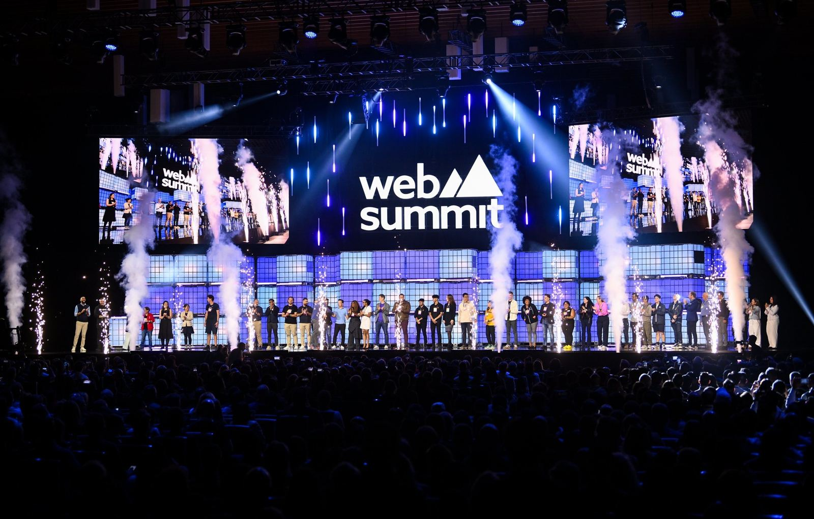

Conferences · Tech
Web Summit Vancouver 2027
- Dates
- –
- Venue
- Vancouver Convention Centre
- Location
- Vancouver, Canada
- Format
- In-person
- Category
- Tech
- Industry
- Tech / startups
- Organiser
- Web Summit
- Expected attendance
- 20,235
- Official website
- https://vancouver.websummit.com/
About
Successor to Collision (Toronto, ended 2024). Canadian dates are local to the host city.
Topics: AI, startups, venture capital, SaaS.
Official Web Summit Vancouver news post: 'Web Summit Vancouver welcomes 20,235 attendees' (2026 edition, not a 2027 forecast).